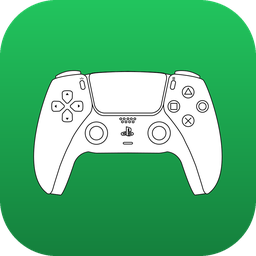
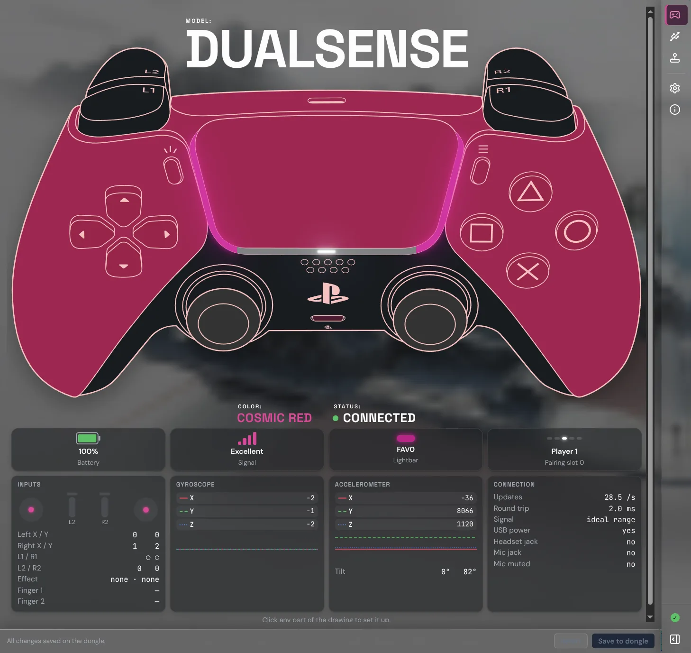
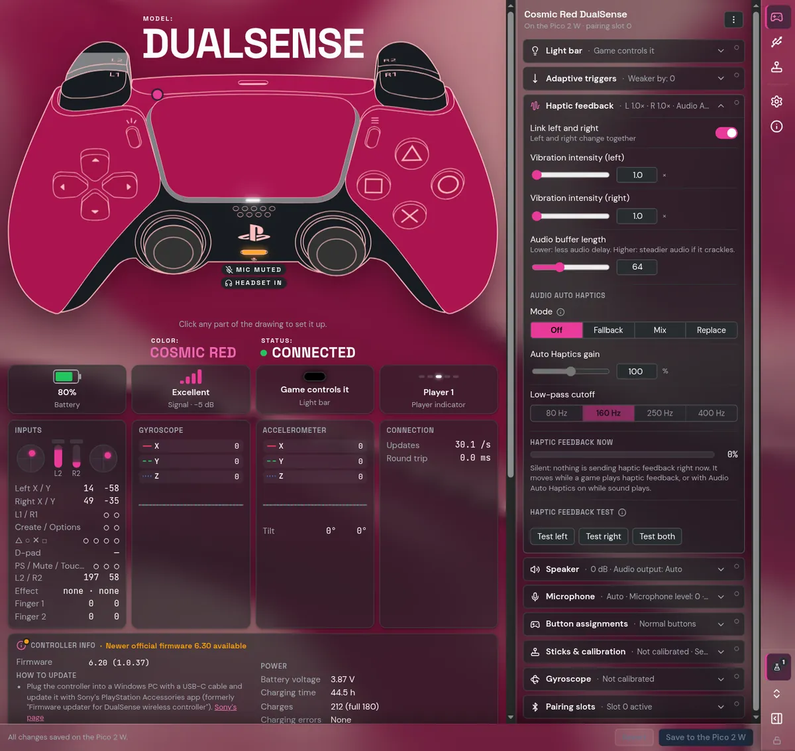
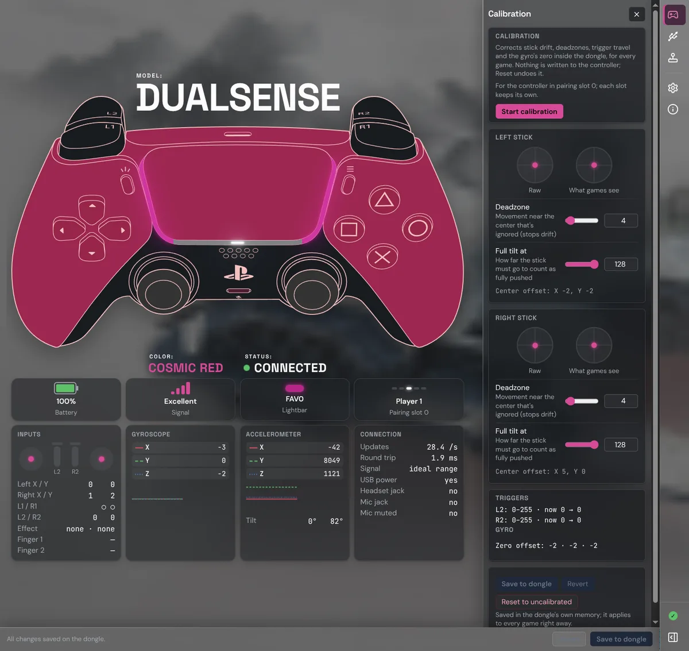
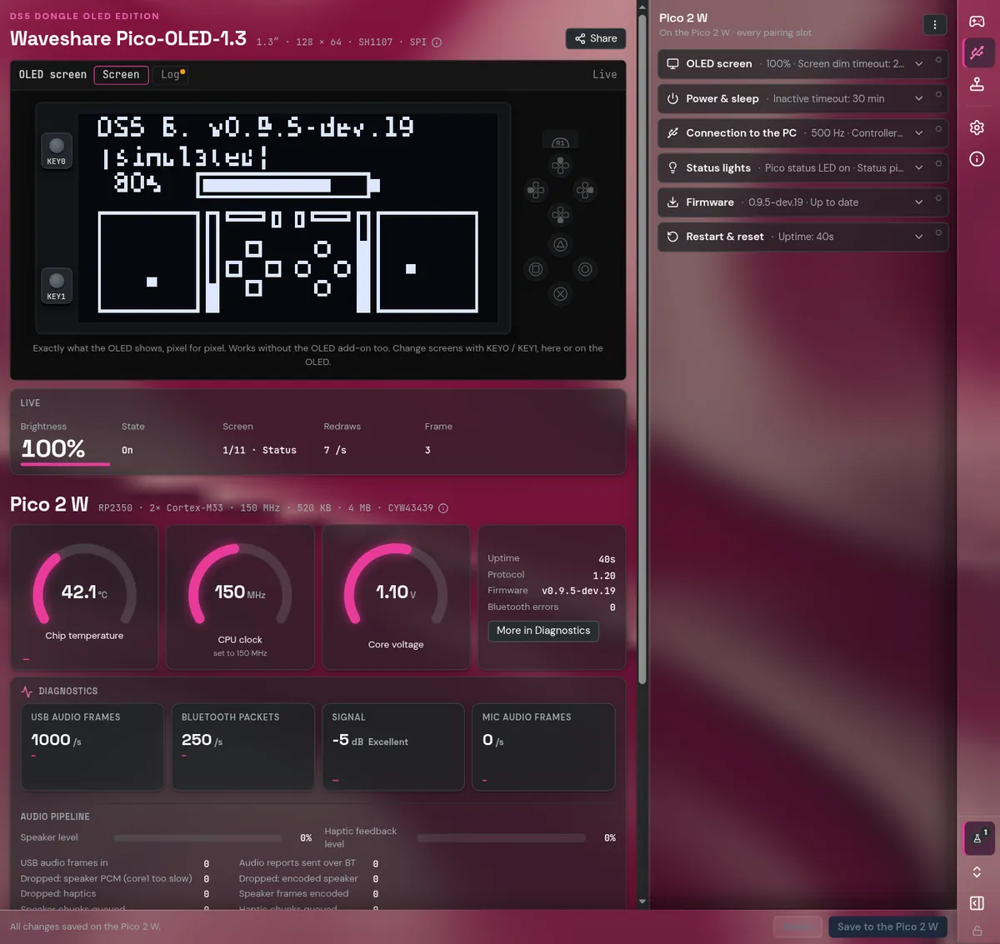

Live controller
Buttons light up, triggers fill, sticks move and touches show as you play. Under it: every number the controller reports, with motion graphs.

DS5 Dongle OLED EditionNew in 0.9.5-dev.19 (Release Candidate 1): DualSense Edge support, stick sensitivity curves, sleep and wake with your PC, HDR games on Linux
The DS5 Dongle OLED Edition turns a Raspberry Pi Pico 2 W into a Bluetooth bridge that games see as a wired DualSense, with adaptive triggers, haptic feedback, built-in speaker and microphone. The app sets it all up, keeps its firmware current, and shows your controller live, in its own colors.

Buttons light up, triggers fill, sticks move and touches show as you play. Under it: every number the controller reports, with motion graphs.
The app ships with the firmware. It installs it on a new Pico and keeps your dongle up to date: no BOOTSEL button, no files to copy.
Plug it in and it works on Linux and Windows, and it has been reported working on macOS 27.0.1. The app is tested on Linux, Windows 11 and macOS (on macOS the smoke test installs and runs it on a real Apple Silicon Mac). To games it's a real DualSense; the app talks to the dongle on its own USB channel.
The app reads which DualSense is connected (including the Edge) and draws it in its own colorway: Cosmic Red, Midnight Black, Starlight Blue, Chroma Teal and more.



Everything else, step by step, with a picture for each: the guide.
Looking for the old browser configurator? It has been replaced by the app, which does everything it did and more.